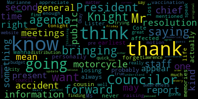

[Caraviello]: The 11th regular meeting of the Medford City Council March 16th 2021. Mr. Clerk, please call the roll. Councilor Bears? Present.
[Hurtubise]: Councilor Falco? Present. Vice President Knight? Present. Councilor Marks? Councilor Morell? Present. Councilor Scarpelli? Present.
[SPEAKER_12]: President, please rise and salute the flag. I pledge allegiance to the flag of the United States of America and to the republic for which it stands, one nation under God, indivisible, with liberty and justice for all.
[Caraviello]: Pursuant to Governor Baker's March 12, 2020 order suspending certain provisions of the Open Meeting Law, Chapter 38, Section 18, and the Governor's March 15, 2020 order imposing the strict limitation on the number of people that may gather in one place, this meeting of the Medford City Council will be conducted via remote participation to the greatest extent possible. Specific information and the general guidelines for remote participation by members of the public and or parties with a right or requirement to attend this meeting can be found on the City of Medford website at www.medford.org. For this meeting, members of the public who wish to listen or watch the meeting may do so by accessing the meeting link contained herein. No in-person attendance of members of the public will be permitted, but every effort will be made to ensure that the public can adequately access the proceedings in real time via technological means. In the event we were unable to do so, despite best efforts, we will post on the City of Medford or Medford Community Media website an audio or video recording, transcript, or other comprehensive record of the proceedings as soon as possible after the meeting. Okay. Vice President Knight. One, eight, seven. On the motion by Vice President Knight to suspend the rules to take paper two, one, eight, one, seven out of order. Do we have a second? Seconded by Councilor Scott Felding. Mr. Clerk, please call the roll.
[Hurtubise]: Councilor Bears. Yes. Councilor Felding.
[Caraviello]: Yes.
[Hurtubise]: Vice President Knight.
[Caraviello]: Yes.
[Hurtubise]: Councilor Martins.
[Caraviello]: Yes.
[Hurtubise]: Councilor Morell.
[Caraviello]: Yes. 7 in the affirmative, motion passes. Vice President Knight. Mr. President, I believe there's a resolution to be ready for the record. 21187 offered by Vice President Knight, whereas Governor Baker has declared March 21st or April 30th, 2021 motorcycle awareness period, and whereas the city of Bedford has over 900 motorcycles registered in the city, and whereas motorcycle crash fatalities in the Commonwealth have increased, in each of the past three years, and whereas the city of Medford was the site of a motorcycle crash fatality in 2020, be it resolved at the request of the Medford City Council and on behalf of the Massachusetts Motorcycle Association and the Medford Motorcycle Community that the mayor of the city of Medford issue the following proclamation. A proclamation naming March 21 through April 30th motorcycle awareness period in the city of Medford. Whereas the motorcycle is a popular means of transportation for commuting as well as touring and recreation. Whereas there was a growing need for cooperation among drivers of automobiles and trucks, motorcycles and bicycles and pedestrians who use our streets and the highways to reduce injuries and fatality. And whereas, Whereas, it is critical for all Massachusetts citizens to increase their knowledge of the rules of the road and the rights and the responsibility of roadway use. And whereas, the numerous organizations that are committed to making our streets and highways safe for all motor vehicle related transportation, including the Highway Safety Division of the Massachusetts Rider Education Program, the Registry of Motor Vehicles, the American Motorcycle Association, Motorcycle Safety Foundation, the Massachusetts Motorcycle Association, the Metro Malden Elk Riders, and many other motorcycle businesses and clubs in the Commonwealth. Now, I hereby, I, Honorable Mayor, Breanna Lungo-Koehn, Mayor of the City of Medford, do hereby proclaim March 21 to April 30th to be Motorcycle Awareness Period. Vice President Knight.
[Knight]: Mr. President, thank you very much. This resolution has been put on the agenda on behalf of the Massachusetts Motorcycle Association. The Massachusetts Motorcycle Association is the premier organization that lobbies for motorcycle safety. Many of us around town will see the signs on their coordinated campaigns across the state. Motorcycles are everywhere. Big yellow signs with black writing. I think look twice and save lives. Mr. President, the Massachusetts Motorcycle Association has been at the forefront of motorcycle safety initiatives for as long as I can remember. Tonight we have with us Mr. Paul Cote from the Massachusetts Motorcycle Association, who I met some 15 years ago while he was lobbying up the statehouse for motorcycle safety initiatives. So with that being said, Mr. President, I'm offering this resolution on behalf of the Massachusetts Motorcycle Association and the motorcycle community here in the city of Medford to promote safety. It's an unfortunate and tragic fact that Medford was the site of a motorcycle fatality last year. A Malden resident was killed in an accident. And it's initiatives like this that help us bring awareness to the safety on the roadways and what's necessary and to be sure that we share them with the motorcycles, Mr. President. So with that being said, I'd like to ask Mr. Cote.
[Caraviello]: We do have a couple of councils with the hands up. Excellent. Thank you. Councilor Morocco.
[Morell]: Thank you, Mr. President. I would love to hear from the people in attendance, but I do just want to know, I thank vice president Knight for bringing this forward. My cousin Ashley, a few years back was actually riding on the back of her fiance's motorcycle and was clipped by a motorist on 93. She almost died and after a lengthy recovery, she has a traumatic brain injury that she will live with for the rest of her life, simply because a negligent motorist nearly took her life. So this is an important proclamation and I really thank Vice President Knight for bringing this forward. Thank you.
[Bears]: Thank you, Mr. President. I also wanted to thank Councilor Knight for bringing this forward for the exact reason that Councilor Morell just noted, which is I think many of us know friends or family members who have been injured because of negligent operation by motorists and not looking twice and seeing motorcyclists. So thank you, Councilor Knight. And I hope this proclamation is declared.
[Caraviello]: Thank you. Councilor Scarpelli.
[Marks]: Thank you, Mr. President. Thank you, Councilor and Vice President Knight for bringing this forward. I want to applaud Mr. Cote and Ms. Lister for all the work that they've done to make sure this is in the forefront of our state, making sure that motorcycle safety is something that's not falling from the wayside. God, I can remember Betsy riding her bike through Medford for a long time now, and she was the first person that would hop off her bike and make sure that if people didn't follow the rules, make sure they got a lesson. And that's a scary lesson to learn, let me tell you. So I appreciate what you do do in keeping this going. I think that it can't be forgotten because like Councilor Morell said, I'm sorry, something personal happened to her life. I think that when you think about it, we've all had someone affected. negatively because of negligent driving with motorcycles and not taking their safety as a priority. So I thank Councilor Knight again for bringing this forward and I appreciate your effort, all your work. Thank you. Thank you. Councilor Palacios.
[Falco]: Thank you, Mr. President. And I also want to thank Councilor Knight for bringing this forward. I too, I actually, one of my probably earliest memories is losing my cousin to a motorcycle accident. And it's something that's always, you know, affected me personally, that she lost her life in a motorcycle accident. And it's something you never forget. And Councilor Knight, I wanna thank you for bringing this forward and thank Ms. Lister and Mr. Cote for raising awareness. And, you know, we can't speak enough about this. I appreciate you being here tonight. Councilor Knight, thank you for bringing this forward. And I would second the motion, thank you.
[Caraviello]: Thank you.
[Marks]: Councilor Marks. Thank you, Mr. President. And I want to thank again, Vice President Knight for putting this on. You know, every year we try to raise motorcycle awareness in this community through a number of initiatives. This is probably one of the most popular initiatives where we have the rally on Mystic Ave. Hopefully we can get back to that, Mr. President, when this COVID bypasses us However, Mr. President, I think it's important that we make this aware because many people think the streets are owned by cars. And there are other vehicles, including motorcycles, bicycles, that are on the roadway as well. And I think drivers have to be mindful that they don't own the streets. They share them with other vehicles. And it's important, Mr. President, that we spread that around. It's also important as a community that we create safe spaces for motorcycles as well, Mr. President. Many communities have motorcycle parking spots, which I'm not aware of any in this community. And these are the initiatives I think that will bring public awareness out there so people understand that there are other means of modes of transportation other than cars that are out there that are safe. And, you know, in my opinion, You know, I think motorcycle drivers get a bad rap. You know, when I see motorcycle drivers, they're always paying attention to the road. They're always using their singles. They're always driving accordingly to the rules and regulations. And I think it's only important, Mr. President, that we bring this awareness forward. You know, riding a motorcycle, you know, two gallons of gas, three gallons of gas, you can go 50, 70, 80 miles. And, you know, in this time of trying to conserve and so forth, I think it's a mode of transportation that we really need to get out there, Mr. President, and support. So, I want to thank my colleague for putting this on.
[Caraviello]: Thank you. And myself, I want to thank Vice President Knight and Mr. Coté and Ms. Lister for being here this evening. Mostly, like I say, Council Member Marks made a point. The roads are owned by everybody, not just cars, so we need to make sure that people pay attention when they drive. As someone who drives for a living, I see the importance of safety on the road. So, again, I want to thank Councilor Naik for bringing this forward, and we'll open discussion for public.
[Marks]: Mr. President, if you'll indulge me, I'm a firm believer that the city clerk should be seen at these meetings, but not heard. But I want to thank Vice President Knight for putting this resolution on and putting this proclamation on. Almost 41 years ago, not too far from here, I lost my own father in a motorcycle accident. And it's something I think about every day. It's something that's seared in my brain. And there is no such thing as enough safety awareness around motorcycles. And so from the bottom of my heart, thank you for putting this on tonight.
[Caraviello]: Thank you. Do we have any discussion from the public? Mr. Coté? Good evening. Name and address of the record, please.
[SPEAKER_14]: Paul Coté, One Birchwood Point, Amesbury, Massachusetts. Just first of all, thank you. for your loss, the other councilors' loss, and your dad, Mr. Burke. 20 years ago, we started the Motorcycle Survivors Fund, bikers helping bikers, riders helping riders, where we do events to raise money to help families of riders killed or seriously injured in accidents, and to promote motorcycle safety and awareness. Hopefully, we don't have to give anyway. That would be the best thing. But we know it's not a perfect world, And it's not all road users. It's not just motorcyclists. It's, as you said, it's pedestrians, bicyclists. With spring coming, you're going to be baby carriers and stuff out there. So everybody should be aware. And it takes three seconds to check twice. And Betsy and I, Adam was there at the time at the State House with Charlie Shannon. And we used to have to beg the governor at the time to issue the proclamation. And they would issue it, but then they wouldn't do anything with it. So we had a bill passed. Well, it was in OHAPA. The rest of the country celebrates May as Motorcycle Safety Awareness Period. May being an acronym for Motorcycle and You. Motorcycles and You. And geographically in the country, but the American Motorcycle Association, the weather is good. all across the North, usually in May. We looked at the 98, 99, and 2000 fatalities. We found 27% happened in February, March, and April. We said, why May? Somebody smarter than us will come up with an acronym for March. Took about 30 seconds. Motorcycle awareness really can help, dot, dot, dot, save lives. We believe it does. Proclamation was changed, or the bill was changed. It was enacted in June 4th, 2002. So this is the 19th year, very much appreciated. We try to go to cities and towns to get local government. You have over 900 registered motorcycles in Manhattan. They all got families, just like we all do. And everybody that rides a motorcycle does something else. Again, thank you very much. Thank you very much. Betsy was there throughout it all. Awesome. Thank you.
[Betsy Lister]: Thank you.
[Caraviello]: Good evening. Name and address of the record, please.
[Betsy Lister]: Betsy Lister, 12 Ross Street, Method Mass. May I from here?
[Caraviello]: No. Please keep your mask on. I appreciate it.
[Betsy Lister]: So first of all, I feel horrible for all of you who have been affected by motorcycle accidents and fatalities. I've had one or more myself. that involved broken bones by the driver being respectful of my space. I've been a proponent along with Paul for many, many years. I did a video with Ben Abbott book and the Method Police back in the day. I cannot remember the year right this minute. but I believe it was played on local television about motorcycle safety, education, and awareness. And just to let you know how hard we've been fighting throughout the Commonwealth for safety, as Paul was mentioning, when we first started this, the motorcycles were a two paragraph situation in the driver's manual. and from Commonwealth of Massachusetts. In the whole driver's manual, there was a whole two-paragraph section about motorcycles. We got that changed, and I, along with our motorcycle rep, Gene Caribbean, of the Massachusetts Registry, rewrote the whole manual, and now motorcycles have their very own manual. Also, Paul and I have worked together to get motorcycle safety education and awareness involved in the safety, the driver class, the driver education class. I'm sorry. I don't know why I'm so nervous. I'm usually very good speaker. And so that got done. It's a lot. Mostly, usually it's the full month. February, March through April, the whole month of March through April to August, but we'll take a week. We'll take whatever we can get. And I just want to thank you. I'm also involved with the Crystal Chamberlain ride with Johnny Joyce. And I'm the person who is the lead road captain and actually leads the rides and will give the safety talk to everybody. So these are important matters and we love Method. We just adore Method and it would be so great, the idea of having motorcycle parking spaces is awesome. Motorcyclists have money, just in case you didn't know, and they like to spend it in the community that welcomes them. So just a little hint, if there was something like that happening at a place that would welcome us, bring money to town. Again, I want to thank you very much for this consideration, and we're not done. We're going to keep on promoting motorcycle safety education and awareness for as long as we can. Thank you all again for this opportunity.
[Caraviello]: Thank you very much. On the motion by Vice President Knight, seconded by Councilor Falco. Mr. Clerk, please call the roll.
[Marks]: Councilor Bears. Yes. Councilor Falco. Yes.
[Hurtubise]: for that night.
[Marks]: Yes.
[Hurtubise]: Yes.
[Caraviello]: Yes. Yes. Yes, seven affirmative motion passes. Well, while we're on the special week, we can take Mariana O'Connor for her brief update on the on the vaccine area.
[0SdCkR9KuqQ_SPEAKER_06]: Hi, how are you? Good to see you all. So, um, are there any questions I could take up front, or do you want me to just go on a little update as we're at. It's been some really.
[Caraviello]: Sorry, we thought they would be great.
[0SdCkR9KuqQ_SPEAKER_06]: Okay, so interestingly enough, in the last 10 minutes, I received an email from the state saying that tomorrow, they are gonna announce the schedule for all remaining groups in Massachusetts for the vaccine plan. So that's news to me, and that just came out. But again, at the same time, we're being told by the state that they are still getting The same level of vaccine distribution from the feds, there has really been a very slight increase, if any. They are expecting more within the next several weeks, and hopefully by April. But still again, locals are not included in their plans at this point. We've only gotten housing authority doses that we were able to distribute last week. We're hoping that that loosens up a bit, but we also received encouraging news today that we are in a coalition, it's called the Metro North Coalition. We submitted a plan to the state in partnership with the Cambridge Health Alliance to be able to establish a regional site, and here in Medford, actually, with the Gansher Center. Tufts University is off at the Gansher Center. as a place for a regional site with a little hesitant at first because you open one of these sites you're approved by the state. That means everyone in the state is allowed to sign up for vaccines. It's a public clinic. But now there's also a caveat that 25% of the vaccines have to be allotted for local communities. So that's a good thing. So there will be access right here in Medford, which is amazing. But again, with the vaccine being distributed minimally as it is, we're not looking at that happening till probably April. What we've done so far though, and I want people to be aware that as of last Thursday, the state did stop publishing on their website, Thursday evenings, a vaccine distribution report, which is by community. We had been asking for that and now it's here. So you can look by community at the vaccine distribution by race, by age, and by overall distribution. And we're looking pretty good at this point. 51% of our 65 to 74 year olds have received at least one dose. And this was prior to our 75 plus second dose clinic, which we held on Saturday at the Andrews, which was extremely rewarding. We did about 350, 75 plus. uh, folks for their second dose. Um, so that was great. We've done additional homebound folks last weekend this week. We're doing the housing authority folks. We did 10 pond walking court and Walden, um, last week we'll be doing Riverside F on Friday. So to date we've done about 3100 doses to the community in about 18 clinics. So between the Cambridge Health Alliance partnership coming in and what we're able to still do, we are going to be continuing to do homebound with what we have. And hopefully going forward, the state's going to allow us more to do the homebound anyways. So that's the vaccine update. Questions.
[Morell]: Thank you, Mr. President, and thank you, Marianne, for being here. If I could ask just two questions through the chair. So for those, the coalition, what will be at the Ginger Center at Tufts, is that confirmed? Because I know there's been times when I work for an employer that didn't get all set up to be able to give out vaccines as an employer, and then the state kind of took that back. So is that coalition, is that something that's like, even though we don't know the dates, is that something definitely going to happen? Or is there a possibility the state could change their minds still?
[0SdCkR9KuqQ_SPEAKER_06]: I hope not. But no, we just actually got the official approval today. So we are set up as but but it came with, we don't know when we'll have the vaccines for you, but you're approved.
[Morell]: So yeah. And then following up on that with the registration or the sign up for that, is that something that we would have to build or that would be all through the state, they would handle that?
[0SdCkR9KuqQ_SPEAKER_06]: That would be, it would be a public website. So part of the agreement with doing this is that you have to be open to the entire state. So you're on a public website. So you'd be part of that. Now the new pre-registration system that they have with Google and the PrepMod system, which was the prior system, where you go on and register. So it's a statewide, But they did say, and again, the details haven't worked out. So I don't know how they do that as far as allowing us to have 25%, you know, for local communities. I'm not sure how that what the details are and how they're going to do that.
[Morell]: But okay, so yeah, just the follow up would be, so if someone's, you know, they're, they're already pre registered, or they go and pre register, this may just be an option that comes up for them when it's available. Exactly. Great. Okay, thank you. That's all I have.
[Caraviello]: Any further questions, Marianne. Councilor Falco.
[Falco]: Thank you, Mr. President. Marianne, thank you very much for your report. You had mentioned before that they have a vaccination distribution report. Was it by city?
[0SdCkR9KuqQ_SPEAKER_06]: Yes, now it's by city. It started last Thursday and I believe it's going to be every Thursday evening with their typical state metrics report.
[Falco]: Okay, great. Do you know where, do you know which website, we could find that information?
[0SdCkR9KuqQ_SPEAKER_06]: So yeah, it's it's the mass.gov COVID website. And you look at that now they have a whole nother vaccination report line. And you look at it's by municipality will say municipality vaccination report line. It I just extrapolated methods and and it's very interesting. We have a ways to go it looks like with messaging and access for our Hispanic and Black and multiracial and Asian folks, because you can see by this report that disproportionately they are not receiving vaccines. So we need to do better at that. We're working on that. We have a program in place and we're trying to do some outreach, but it's kind of encouraging when you look at the numbers that have been vaccinated, at least with one dose so far. Mass.gov COVID-19 reports. You'll see the weekly now vaccination reports.
[Marks]: Okay, perfect. Thank you very much. Appreciate it. Mr. President. Councilor Marks. I just want to personally thank Director O'Connor for the update and I appreciate her appearing before the city council to not only notify this council, but also the viewing audience. And I find it very helpful. Just want to thank her.
[Caraviello]: Thank you, Marianne, and look forward to seeing you next week for a few minutes.
[0SdCkR9KuqQ_SPEAKER_06]: Thanks, guys. Take care. Be safe.
[Caraviello]: 2-1-1-8-9. Chief of Staff Rodriguez did have his hand raised about the vaccine.
[Bears]: I apologize. Dave Rodriguez.
[Dave Rodrigues]: No, I just gonna jump on one of Marianne's points. The spreadsheet that we're downloading from the state website's a little cumbersome. So we are gonna distill that, it will be on the city website in kind of a more palatable form. Usually it'll take us a day or two to kind of distill that information, but it will be on the city website as well.
[Marks]: Thank you very much. Mr. President. Council Members. While we're under suspension, last week myself and Councilor Scarpelli brought up paper 21-094, which was a resolve requesting the police, fire and DPW department heads appear before the city council on March 16th to provide us department updates. I was just wondering if anyone of the chiefs or the DPW commissioner was on the call today.
[Caraviello]: Councilor Marks, I do not see any one of them on there. I could be mistaken. If you are on the line, please let me know, but I do not see them on the, the chat, Mr. Councilman.
[Marks]: So, Mr. President, were the three duly notified by the city clerk?
[Caraviello]: The clerk has notified the chief of staff with the normal procedure. I don't know. Mr. Dave Rodriguez, could you address Councilor Marks's question?
[Dave Rodrigues]: or we received the resolution yesterday in the normal course, which was a quick turnaround for us to get everybody organized for this evening, but we can work out a schedule. Mr. President, if you want to give us a call, we're happy to work out a schedule for these departments to appear before the council and provide a general update.
[Marks]: Okay, just for my own edification, what's the typical turnaround time then for once the council approves the resolution, voted on by the council on a Tuesday night, when will that paper be received by the city administration? They typically go Friday morning or Monday morning, depending on when I finish the records. Friday or Monday. So for a particular request like this, where it's time sensitive, is there any way we can get a quicker response? I mean, I know Jen in our office did talk to Daria and the mayor's office to let her know that that specific request was coming. Okay. So are we being told that they're coming next week? Is that what it is? I don't know.
[Caraviello]: I have not, I have not received that information that they're coming next week. I think the chief of staff wants me to get in touch with him and set up a time. I had given them a couple of times also in an email. So I don't know if those times work either.
[Marks]: I'm talking about the budget before the city council.
[Caraviello]: I had also given them time for pre-budget meetings
[Marks]: No, no, no, no. This was something different.
[Caraviello]: Yes.
[Marks]: This was something I saw Councilor Scarpelli put on just for an update from the three department heads. This has nothing to do with budget. So we have, I believe the chief of staff on now. He is on now. Are they coming up next week? Because the paper was, I guess, received yesterday and that doesn't give ample time, which I understand. But are they coming next week?
[Dave Rodrigues]: We can make arrangements for them to come next week. I'll consult with the chiefs and make sure that they're available at that time. If they are not, I will transmit that information to the council forthwith.
[Marks]: Okay, I just would like you to know that I will be extremely displeased if they're not able to attend next week's meeting.
[Dave Rodrigues]: Sure, I just don't want to make commitments on their behalf.
[Marks]: So I want to make sure- I understand that. I understand that.
[Caraviello]: Councilor Bears had his hand up first.
[Bears]: Thank you, Mr. President. And just through the chair, I think when we are doing this, it's important that the item appears on the agenda just for open meeting law. So, you know, if they are coming next week, I think the paper should be on the agenda next week so that the public is adequately informed that this will be discussed.
[Caraviello]: Thank you. Councilor Falco.
[Falco]: Thank you. Through you to the chief of staff, I think, so we're gonna have pre-budget meetings as well or no?
[Caraviello]: I, we had requested that.
[Dave Rodrigues]: I think that's an ongoing conversation with the council president.
[Caraviello]: Okay. Let's say I did, I did send the chief of staff some requested dates. I don't know where they've gone since then, but I will send some more dates out tomorrow. Councilor Taoko, you're done.
[Falco]: So if I may, to the chief of staff, so is it just a matter of finding the time?
[Dave Rodrigues]: It was a matter of finding a time as well as kind of mapping out exactly what the expectations were from the council so that we can adequately prepare for the meetings. We wanted to make sure that we had the appropriate staff lined up. So the budget team was available, so the departments were available. If we want to, the expectation is that the budget will be presented to the council no later than the second week of May. So the budget team is working pretty hard to make sure that is accomplished. So, so we're happy to try to work, work out a schedule with the with the council president that works for both the council and the administration.
[Caraviello]: Thank you. A resolution has already been on the council agenda so we don't need to put another one on again. Actually, we can't, we can't because that we get up to resolutions for the same thing within that within a 90 day period.
[Bears]: I think that's an open meeting law violation if it's not posted on the agenda and we're having an update. If we're gonna ask questions and deliberate on items, it has to be on the agenda.
[Caraviello]: Okay, I'll check with that.
[Marks]: Mr. President, point of information. Point of information, Councilor Marks. The request last week was to have three department heads appear before the council. The council has every right to ask whether those that we invited are here, Mr. President, to discuss what we asked them to the previous week. This is nothing new, Mr. President.
[Bears]: Right. And Mr. President, I'm not disputing that at all. I'm just saying that same paper that was on last week should be on. You know, we if we have a paper on the agenda, sometimes it comes back up on the agenda when we're discussing it again. I'm saying that same paper should appear on the agenda. Uh, because if not, then there's no publicly posted item that they're going to be providing an update. And I think that means that we can't deliberate on the matter.
[Falco]: If I may really quick, I think that's true. I think I know from, I think I know kind of what a council appears is trying to say. And I think that's kind of like when we had the Lawrence Memorial update meetings, we passed the original resolution, but that same resolution would come up every time that they were going to be on the agenda. So I'm thinking that You know, I mean.
[Marks]: Right, because that's the way we voted on it.
[Caraviello]: We voted on it at 16. That's what the agenda writer said at 16.
[Marks]: This was a date certain that we asked the parliaments to come up. We're not asking every week, every other week, you know, this is a date certain.
[Falco]: But I guess through what Councilor Bears is saying is how would the general public know that they're going to be here?
[Marks]: They would know if they were tuning in last week, which the request was last week, that they appear this week.
[Falco]: I understand that, right? But when they get this agenda on Friday, they get everything that's going to be on this current week. If that information is not on this agenda, no one would know that they were ever going to be here to present. That's all I'm saying. I mean, I agree with you. I want them here, believe me, and I want them to present. But the general public wouldn't know they're going to be here if it's not on here again. That's all I'm saying. I think we're all in agreement.
[Knight]: It's just... Mr. President, all we have to do is put the paper from last week on the agenda.
[Falco]: Exactly.
[Knight]: We'll take care.
[Caraviello]: Councilor Scarponi.
[Marks]: Again, thank you. I, too, I'm glad to hear that there's a legitimate reason why department heads on here. And I think that what's important is, again, it's not really the pre-budget discussions. It's making sure that this council hears from our major department heads moving into the budget season, which is, it's, I hope the council president and city administration iron that out and get a schedule on what we have. I personally thought we were pretty clear on what we were asking for in the budget. I think that, so I'm a little confused with that, but I think that it's important that we meet with these department heads and our department heads to make sure that as they step up to that, the pre-budget meetings and the budget meetings that we have all the information we need as a council to make educated decisions on fiscal affairs of this community. Because I think if you look at it, that's truly our number one priority, if I'm not correct. So this is truly the most important thing we do now as our rule. So I think it's important that we get the assistance and the cooperation from everybody involved so we can make this happen. So we can make educated decisions when it comes to our budget. I know that just maybe the chief of staff can dispel some rumors, but the rumor out there is I got a phone call today saying, we're getting $39 million, we're getting $50 million. What people don't really understand is what the true number is and how it's divided or where that can be spent. So, they're already talking, just put it to a new fire station, put it to a new building, it's in the schools. So we just gotta make sure the community knows when these numbers come out. that if we can get, Mr. Clerk, if we can get just a report just so maybe from the city administration, just so that people can understand what these monies that the state is releasing right now, that it isn't free cash that we can plug in anytime we want for the next six months, because I think that's the rumor that needs to be dispelled. So thank you. Councilor Morell.
[Morell]: Thank you, Mr. President. My point was addressed earlier, so I'm all set, thank you.
[Caraviello]: Okay, next week we'll have them on, this will be placed on the agenda on the reports due. So everyone will have, it'll be on there. That's how you'll be, the people will be notified. Thank you. While we're on suspension, 21819, petition for a common victor's license. 189 petition for common victor's by Mark Kafua. 280 Meramec Street, Methuen Mass, for Greater Boston, Dunkin' Donuts, LLC, 7th Commercial Street, Medford. I'll refer this to the Chairman of Licensing, Councilor Scarpelli.
[Hurtubise]: Thank you, Mr. President. Mr. Kapoor here this evening.
[Caraviello]: I see Dunkin' Donuts is on the line here. I don't know who is on there. Someone from Dunkin' Donuts? I see Dunkin' Donuts on the line here. Someone from the company?
[GswFX5Excbs_SPEAKER_11]: Hi, yes, Emily Fitzgerald here for Markafua.
[Caraviello]: How are you doing? Name and address. Name and address of the record, please.
[GswFX5Excbs_SPEAKER_11]: Emily Fitzgerald. I'm sorry, say that again.
[Caraviello]: Your name and address for the record, please.
[GswFX5Excbs_SPEAKER_11]: Emily Fitzgerald, 280 Merrimack Street, Mississippi, Mass.
[Caraviello]: Thank you.
[Marks]: Okay, thank you, ma'am. We're just reviewing this. This is the actual, there's really, it looks like just a change of ownership, is that correct?
[GswFX5Excbs_SPEAKER_11]: Yes.
[Marks]: And the hours of operations, can you expound on that?
[GswFX5Excbs_SPEAKER_11]: Yes, the hours of operation are 4.30 a.m. to 8 p.m., Sunday through Saturday.
[Marks]: Yep. Okay, so it sounds like it stays the same. I see everything in order, Mr. President. I move forward for approval on this paper. I know, unless my council colleagues have some questions.
[Caraviello]: Do we have any questions on the motion for approval? On the motion by Chairman Scarpelli, seconded by Vice President Knight for approval. Mr. Clerk, please call the roll.
[Marks]: Councilor Bears. Yes. Councilor Lococo. Yes. Vice President Knight. Yes. Councilor Marks. Councilor Morell. Yes. Councilor Scarpelli. Yes. President Caraviello. Yes, affirmative motion passes.
[Caraviello]: Motion, motion. I want a suspension.
[Hurtubise]: We can take public participation.
[Caraviello]: We can take public on the motion by Councilor Marks, seconded by.
[Falco]: Second.
[Caraviello]: Seconded by Councilor Falco to take public participation. Mr. Clerk, please call the roll.
[Marks]: Councilor Bears. Yes. Councilor Falco.
[SPEAKER_12]: Yes.
[Marks]: Vice President Knight. Councilor Marks. Yes. Councilor Morell. Yes. Councilor Scarpelli.
[Hurtubise]: Yes.
[Caraviello]: President Caraviello. Yes. Seven in the affirmative. Motion passes. Public participation. Mr. Bente. Yes. Good evening. Name and address for the record, please.
[Penta]: My name is Robert Pentez, Zero Summit Road, Method Nest. And I think what I have on the agenda is a discussion of Method's pay to park program. And I believe you gave me the catalyst to do this, Mr. Caraviello, Council President, because for some years you've asked for a report and we really haven't gotten a report. I don't know if you can hear me on this. Is this coming through?
[Caraviello]: We can hear you.
[Penta]: You can hear me, okay. Okay, I'd like to go back to, as a quick side note, to September of 2009, when then Mayor McGlynn had a commission set up as it relates to how was parking going to be addressed in the city because it was a revenue item here in the city. At that point in time, Councilor Marks served on that committee And one of their recommendations was to possibly look into having a civilian parking commission in the city. Now that was in 2009. And it didn't take place until I believe it started in May of 2014, when then Mayor McGlynn decided we were going to do something about parking here in the city of Medford. And as a result of that, from the months of May through the months of December of 2014, we went through an arduous task of reviewing how and what packing was going to be here in the city of Medford. So what I'm asking for is that a complete breakdown from inception, starting from calendar year 2015, right up to date, be brought forward, and I'm going to pass out something for all you councillors at the end, that we get so not only the U.S. councillors, but we as citizens have an idea of just how much money that's coming in. Asking for a complete itemized detail is found in the contract that was signed by the city of Medford. And at that point in time, the public parking point, I believe has been resold. And it states on page five on section six on the gross revenue, it says within 20 days after the end of each month, the operator shall provide to the city a statement showing all revenue, including details of citation revenue, meter revenue, permit revenue, and other revenues. And this statement must include a copy of the monthly statement from the separate bank accounts utilized by the operator for the payments and received by the city of Medford. So I'm really not asking for anything other than what should be in this building right now. But the only thing that this building has been able to afford was in the calendar year 2015 and the calendar year 2016, the first report that the then city council asked for. And subsequent to that, nothing has come forward. I believe you have asked three times, Mr. President for a report, an itemized report for which the contract says they were obligated to do. So we're not asking for anything that's outrageous. It's in this building somewhere, somehow. Now, another thing you need to remember is they said, they meaning Republic at the time, they said that the revenues coming into the city of Medford would be approximately $2 million per year. So right now we're into the end of the seventh year. So that would be approximately $14 million thereabouts to be accounted for according to their terms as it relates to what the revenues would be. But if you go on the Medford Parking Commission, they have a Google page here from the city of Medford and they extrapolated from Park Medford, a list of outstanding monies that have owned this old, the city of Medford since 2015. In 2015, still owed, if I'm reading it correctly, it's $339,449. In 2016, it's $368,140. In 2017, it's $375,611. 2018, it's $351,470. 2019, it's $339,449. $148 and past year 2020 was $163,875. Again, if I'm reading this correctly, but I'm standing here tonight to be corrected if I'm wrong. But from reading what Park Method has submitted and what the Method Parking Commission is saying, that's $1,937,693. That's outstanding. That's still owed here to the city of Medford.
[Knight]: Point of information, Mr. President? Point of information, Vice President Knight. Are those totals cumulative or are they annual?
[Penta]: He's a random.
[Knight]: So are you saying that in 2015, there was 300,000 now in 2016, there's 300,000 plus an additional 300,000? Yeah. Are you saying that there's just $300,000?
[Penta]: These amounts have yet to be accounted for as being satisfied.
[Knight]: I question the account.
[Penta]: Well, I'm just telling you with the traffic commission, parking commission, excuse me, it's put on their webpage. But again, as I said, I stand here to be corrected. Plus the fact, plus the fact I believe the $2 million per year that was indicated was part of what park, I mean, Republic Parking said on October, 2014. So if we look and if these numbers are true, there's a little bit of a problem there, why they haven't been collected upon. But therefore, if we're getting $2 million a year for the last seven years, that's $14 million. years eight, nine, and 10, I believe are they're renegotiating yet. So I really don't know if the city's renegotiating. I know they have a new traffic commission, a group of people looking at where you should go and how you're going. And I think you guys and Ms. Morell, you should be up to date as it relates to, you know, what the city is doing with that. Another thing is there is, and I believe- Mr. President. It was an October- What information council members?
[Bears]: Thank you. I just wanted to make a point of information that we did discuss this with the representatives from Park Medford a few weeks ago. And that's one of the reasons that councilor Scarpelli put on the agenda, the amnesty program to try to collect some of the uncollected funds. So we are aware of the problem and there have been resolutions to address it. Thank you councilor Best.
[Penta]: Being aware of the problem. So if in fact these numbers are any way correct, that's $1,937,000 takes back to 2015. there's something wrong with the city not being able to get that money, separate issue. Taking that one step forward, in October of 2014, for those of you that might remember, there was the argument of the five squares, Medford Square being one, would get on an annual basis $50,000. And that was a ball of contention, especially here in the city of Medford, Chamber of Commerce, and then Mayor Mike McGlynn. But toward the end of the year, I believe it was in December of 2014, there was an agreement reached There was an agreement reached with Park Method as it relates to, they now, they would be willing to submit $250,000 would be earmarked. $250,000 would be earmarked on an annual basis, 50,000 for each square. They put that in their folder, in their folder that they passed out, which specifically states that $250,000 annually be subject to appropriation for the district improvement. That's the five districts here in the city of Metro. I know it's been some conversation with the chamber, and I know it's been asked a couple of times, but if that'd be the case, that $50,000 a year going forward for four of the last five years would be approximately $200,000 each square that they haven't seen. Again, the accounting of the money, this goes back to like last week on the water money, on the fees, there has to be an accounting where it's going, how it's being spent, I don't know. So if you take that, put that all together, Mr. President, Mr. Messenger, could you please pass this up? I'm asking on this particular issue here. I think it's important to know that while you might be having a commission or a committee to be looking at the parking revenues, there doesn't seem to be anything going forward because it states on page six, I believe, of the contract that this has to be a renegotiating year with the people that we have in the city right now, years eight, nine, and 10, is the city in fact in a negotiation with the parking company?
[Caraviello]: From what I understand, we're on the one year contract now.
[Penta]: You're on a one year contract. Yes. So for example, if we're on a one year contract, which is year eight, which we're on right now, it's possible at any point in time, this contract ends at the end of this year.
[Caraviello]: That would be up to the administration whether they want to.
[Penta]: So it's up to the administration that that be the case. I would thank Mr. President if in fact that the two million dollars was the estimated amount that we would be getting on an annual basis and we're looking at 1.9 million plus and monies that are owed. Something's not jiving here because those monies whether they're making the two million dollars a year or not How do you let each and every year, how do you let that just continue to escalate and escalate and escalate? I don't know. It's unfair to the people who pay every single day to use the meters. And it's unfair as to the contract as it's written. So it's either a lack of enforcement or I'm reading these numbers wrong, or there's something wrong on the adding and subtracting of how this money's being spent. What you have here, what I gave you comes right out of the contract. The contract is even more specific and more definitive as to what you're looking for. That, as it's written, tells you basically how much money is coming in and where's the majority of it going. The key point to all of this is whether you stay with the company you have now or you go with a new company, you have an in-house, something has to be considered as it relates to outstanding liabilities. And you can't run $1,900,000 in an ongoing liability that started from day one. It just doesn't make any sense. So I would hope that somebody would make a resolution and ask for an annual breakdown of Park Method. I mean, what the contract says does for the city.
[Caraviello]: Thank you. You're approaching your 10 minute time, Mr. Penta.
[Penta]: Say it again.
[Caraviello]: I said, you're approaching your 10 minutes.
[Penta]: Well, that's what I'm asking.
[Caraviello]: If a council wants to make that recommendation that they're more than welcome. Thank you, Mr. Benton.
[Penta]: Nobody's going to do it? What are you asking for? What I gave you right there is a sample of what's on page six, section, I believe.
[Marks]: Exactly. What are you asking us to ask Parkman?
[Penta]: For five years, since inception, from 2015, coming forward, how you got to your revenues, how did you get to your receipts, how did you get to your expenses? You've only done it twice.
[Knight]: When this is a public participation item, I believe the proper procedure would be that the council would take it up and place it on the agenda next week. It will be correct.
[Penta]: Say it again.
[Caraviello]: If you, uh, I say that can, uh, if they have a council, well, we can put that on next week's agenda, um, for a motion.
[Knight]: So, uh, because this is public participation, we changed the rules. last year we said that public participation doesn't get a board number it doesn't need to be voted on by the council any councillor wants to address an issue in front of a public participation don't do so on the next week's agenda as a sponsor of the resolution thank you thank you i didn't hear what do you say thanks i didn't hear because i like as you explain that it's up to one of us to offer next week next week one of us can offer it they can do it now no not under the rules that we have there
[Bears]: Motion to revert to regular business.
[Caraviello]: Motion by Councilor Bears to revert them back to regular business. Seconded by Vice President Knight. Mr. Clerk, please call the roll.
[Marks]: Councilor Bears. Yes. Councilor Falco. Yes. Vice President Knight. Yes. Councilor Marks. Councilor Morell. Yes. Councilor Scarpelli.
[Caraviello]: Yes.
[Marks]: President Caraviello.
[Caraviello]: Yes, seven in the affirmative. Motion passes. Motions, orders, and resolutions offered by President Caraviello be it resolved that the Medford City Council ask the administration what its plans are for outdoor dining for the restaurants for the upcoming spring, summer, and fall season. Mr. Rodriguez, can you, as the city, come up with a plan yet for the outdoor dining for the restaurants for the spring and summer season?
[Dave Rodrigues]: Well, I hope Councilor Scarpelli is OK.
[Caraviello]: Um, I don't know.
[Dave Rodrigues]: Is he covered in the city's insurance? We'll make a resolution to get new chairs. Hopefully you won't Incredible Hulk after I give my answer. Yes, the city administration has been working pretty hard on this in advance of the spring season. We do know that the outdoor dining, unfortunately, had to happen. It was kind of a necessity. It was the mother of invention. we're going to be rolling out the program very shortly in the next couple of weeks on this, but it was a great success for the restaurants that participated. The city was awarded a shared streets grant through the Mass Department of Transportation. Governor Governor Baker actually came to use some of the stuff that we had going on in West Medford Square, so we will be rolling out the program very shortly in the next couple weeks. It will be the who's done some great business resiliency work up at OCD. So it will be a rolling application period. So applications will be available. They'll be due on April 5th. And then we'll start the deployment of some of the Jersey barriers and other infrastructure that that's in place by hopefully by April 15th. That's of course, weather permitting. So we are very hopeful to do that and we'll continue to roll that throughout the spring and summer season. Meanwhile, we will be because of the success of the program, and because of kind of the feedback that we got from restaurants, that the law department is working with the mayor's office in order to present a streamlined ordinance for outdoor dining so that we can continue to do this year over year based upon the great success that we had and the feedback that we received from some restaurants. So we're really excited to roll this out. It was such a great program. We appreciate all the support from the restaurants and all the cooperation. So we're excited to roll it back out.
[Caraviello]: I'm sorry, you said you have a tentative date of April 15th. We're looking for a weather permitting?
[Dave Rodrigues]: whether that's a loose date, we can get to as soon as everything's available to get to the application period. So, but it is, we designed it as a rolling application period. So we'll have April 5th will be the date to apply, buy, so that we can get our stuff together. Then we'll open up another period, another period, another period. So we did hear back from some restaurants who are doing some outdoor improvements because they are excited about the program. So we wanna be able to accommodate them as well. We're expecting a larger, we were expecting more folks to participate than last year.
[Knight]: Thank you. Vice President Knight, this current program's being offered under the governor's executive order, is that correct?
[Dave Rodrigues]: Correct, that extends out to, I believe, 90 days after the declared state of emergency ends. So in anticipation of the state of emergency ending at some point, it's gotta end at some point, we will present a more formalized process to the council for their consideration to be codified to replace the existing outdoor dining policy that exists.
[Caraviello]: And David, if you can reach out to the Chamber of Commerce and send something to them to make sure they kept in the loop so they can notify their members, it would be appreciated.
[Dave Rodrigues]: Sure thing. Miranda Briseño has been working pretty closely with them, so I'll make sure she touches base.
[Caraviello]: Thank you. Do we have any further discussion? On the motion, seconded by Councilor Falco. Mr. Clerk, please call the roll.
[Marks]: Councilor Bears. Yes. Councilor Falco. Yes. Vice President Knight. Yes. Councilor Marks. Councilor Morell.
[Betsy Lister]: Yes.
[Marks]: Councilor Scarpelli.
[Hurtubise]: Yes.
[Caraviello]: President Caraviello. Yes, Assembly Member the motion passes. 2-1, 1-8-4 offered by Vice President Knight being so resolved that the Medford City Council wish Mary Paradiso a very happy 93rd birthday. Vice President Knight.
[Knight]: Mr. President, thank you very much. Mary's a long time resident over on Grove Street. She's the proud grandmother of Preston Holt, one of Medford's finest firefighters, Mr. President. And just recently, she celebrated her 93rd birthday. And if you know Mary, you know she's someone who's full of life, who enjoys her time down the beach in Cape Cod. But more importantly, she's someone that enjoys her family and loves the city of Medford.
[Marks]: And with that being said, Mr. President, I'm hoping that this council will join me in extending a warm and sincere happy birthday to her on this momentous occasion.
[Caraviello]: Thank you. On the motion by Vice President Knight, seconded by Councilor Bacow, Mr. Clark, please call the roll.
[Marks]: Councilor Bears. Yes. Councilor Falco. Yes. Vice President. Yes.
[Hurtubise]: Yes.
[Caraviello]: Yes. Yes, 70 the permanent motion passes to one 185 offered by Vice President night, we have so resolved that the method DPW before probable maintenance along freedom way in preparation for the state mandate deadline for in person learning at our public schools Vice President night.
[Knight]: Yes, Mr. President, it's with great anticipation that many of us await the opening of our schools for in-person learning on a full-time basis. And with that being said, we're going to see an influx of vehicles driving to middle schools and schools. I mean, you look at Freedom Way and the condition that the roadway is in, I think it's an area that needs some attention, Mr. President, before the schools open back up. So I'm asking that DPW go down there and take a look and do some patchwork to ensure that when school does open, that it's safe and also If I can just amend the resolution, also take a look at the crosswalks to be sure that they're properly striped and not school districts.
[Caraviello]: Any further discussion on this? Okay. On the motion by Vice President Knight, as amended by Vice President Knight, seconded by Councilor Scarpelli, Mr. Clerk, please call the roll.
[Marks]: Councilor Bears. Yes. Councilor Caput. Yes. Vice President Knight. Yes. Councilor Marks.
[Hurtubise]: Yes.
[Marks]: Councilor Morell. Yes. Councilor Scarpelli.
[Hurtubise]: Yes.
[Marks]: President Caraviello.
[Caraviello]: Yes, I'm in the affirmative motion passes. 21186, offered by Councilor Marks, be it resolved that a moment of silence be held for lifelong resident, Helen Apples, on her recent passing. Be it further resolved that the council meeting be dedicated in her memory.
[Marks]: Councilor Marks. Thank you, Mr. President. Helen Alpers was a terrific woman, a lifelong Method resident. Her and her husband, Henry, loved spending time with each other. Helen, a little known fact, was a big Red Sox and Patriot fan for many decades, even during the drought of the 50s, 60s, and 70s. Helen was a devoted fan. She was devoted to her family, loving mother, wife, grandmother, sister. aunt, and one of her big things that she liked to do was spend time. And her husband, Henry, had a beautiful garden. I've never seen it, but I was told it was like an oasis. And she loved spending time in the garden that Henry put in the yard. So I would like to just say on behalf of this council, Mr. President, we wish the family well in their sorrow on the loss of Helen.
[Caraviello]: Thank you, Councilor Marks. And if I could say, I didn't know Helen, but I do know Helen's daughters and they're friends of mine. And I wanna wish them condolences on the passing of their mother. On the motion by Councilor Marks, seconded by Councilor Falco. Please take a moment of silence.
[Marks]: Mr. Clerk, please call the roll. Councilor Bears. Yes. Councilor Falco. Yes. Vice President Knight.
[Hurtubise]: Yes.
[Marks]: Councilor Marks. Yes. Councilor Morell.
[Hurtubise]: Yes.
[Marks]: Councilor Scarpelli. President Caraviello.
[Caraviello]: Yes, I'm in the affirmative, motion passes. 21188 offered by Vice President Knight, be it resolved that the city administration provide the city council with requirements and criteria for establishing a ghost kitchen in the city of Medford. Vice President Knight.
[Knight]: Mr. President, thank you very much. Ghost Kitchens are an interesting new business model that's been popping up around the city, and it's something that's sparked my curiosity more than anything else. You know, I've noticed we have Kiki's Barbecue. We have Mr. Beast Burger. We have Guy Fiori's Flavortown Kitchen, all ghost kitchens that are operating out of the city of Metchen. I was just wondering what the regulatory criteria was, whether or not the Board of Health had some sort of filing process that was necessary, Mr. President. The reason that I ask is because, God forbid, somebody ordered delivery from one of these places and got sick and then wanted to call the establishment or reach out to the establishment for whatever reason they may have to. They won't be able to find them. So I just wanted to be sure, Mr. President, that there was some sort of process or what that process wants in place right now. So I'm just asking the question from our Director of the Board of Health and the city administration as to what the process is for applying for a ghost kitchen, if there even is one. It's as simple as that.
[Caraviello]: Vice President Knight, if you wouldn't mind if I amend that to find out if they pay meals taxes.
[Knight]: I certainly wouldn't have a problem with that.
[Caraviello]: And the city of Bedford, I don't know if they do or they do not, I'd like to know if they do collect that. Any other further discussion on this?
[Marks]: Councilor Marks. Just if I could, Mr. President, I think it would be interesting to find out, but it's my understanding that this is an agreement between whatever the ghost kitchen is, like Guy Fieri, and the establishment, and everything's prepared on site at that establishment. So they're preparing it on behalf of, actually, Guy Fieri can't be at 500 ghost kitchens throughout the country. So that's my understanding. I assume everything would apply, but I think it would be interesting to find out.
[Caraviello]: Yeah, again, I'm kind of curious myself to see where they go with this.
[Knight]: In essence, it's the subletting of your license, right? I'm sorry? In essence, it's subleasing your existing license.
[Caraviello]: Yes. That's exactly what they're doing, the subletting. And so I don't know if subletting of a license is illegal.
[Knight]: I'm not opposed to it, Mr. President, quite frankly, I think it brings a lot of options and opportunity to the community. I just want to be sure that we're doing it right and we're protected. Thank you.
[Caraviello]: Okay, on the motion by Vice President Knight, as amended by President Caraviello, seconded by Councilor Scarpelli. Any further discussion? Mr. Clerk, please call the roll.
[Marks]: Councilor Bears. Yes. Councilor Falco?
[Hurtubise]: Yes. Vice President Knight? Yes.
[Morell]: Sorry, I think we lost chamber audio.
[Hurtubise]: We've got you. We have you back now. OK. Councilor Morell, we're asking for your vote. Yes. Okay. Councilor Scarpelli. Yes.
[Caraviello]: President Caraviello. Yes. I mean, the affirmative motion passes. Communications from the mayor. Yeah, Mr. President. I hereby propose the following amendment to the revised ordinances of the city of Bedford. Section 94-35A of the revised ordinance of the city of Bedford, Massachusetts is hereby amended to read as follows. A, a board of appeals provided under Mass General Law chapter 48 section 12 is hereby established consisting of five members who shall be appointed by the mayor. The members shall serve a term of three years. The members shall be residents of the city. The board shall annually elect a chairman among its own members and a clerk. The mayor shall also annually appoint two associate members of such Board of Appeals who shall each be appointed for a one-year term and who shall sit on the Board upon the designation of the Chairman to act in the event of a vacancy, or the absence or inability to act, or an interest on the part of a member thereof. Members and the associate members shall serve until a successor is appointed and qualified, unless sooner removed. Submitted by Her Honor the Mayor, Brianna Lundgren. Mr. President, motion to refer to a committee of the whole with our zoning consultant, Mark Wrobroski. The motion by vice president Knight to refer this to a committee of the whole and discuss it with our zoning consultant, Mark Wrobroski. Seconded. Seconded by councilor Scarpelli. Any discussion on this? Mr. President. Councilor Knox.
[Marks]: Thank you, Mr. President. I do have a question and a request that they may provide us with an explanation on the reason for the change. And also, Mr. President, I'm under the opinion that the ordinance requires that the term of each of the three members that currently sit on the Board of Appeals expire every one year. meaning none of the members will be up all at once. And currently, I believe we have a situation where all the members are currently expired. So I'm kind of concerned how that happened. And secondly, Mr. President, it's important that We have continuity on that board. It's a very important board. It's a very technical board. And it's a very important board in this community. And it's extremely important that we have always a consistent experience knowledge base on that board. And that's the reason for the staggered terms. So I'm just wondering if the mayor can answer the reason for the change and why are all three appointments currently expired from my understanding.
[Caraviello]: Mr. Rodriguez, can you answer Council Mark's questions?
[Dave Rodrigues]: Yes, thank you, Mr. President. Councilor Marks makes a really important point about continuity and kind of that institutional knowledge that board members that have, although there is, and there's also the balance that exists with new voices and diversity of voices across the community. This for a board of this importance, and again, to Councilor Marks' point, this is one of the most influential policymaking boards that the city has, and it's only three members, three voting members. So expanding it to five members, would allow for a greater diversity of voices that represents the entire community a little bit more equitably, as well as expanding it to two associate members to be able to have it be a seven total participating member board, a five member voting board. To answer the question about the staggered terms, it is an issue that we are well aware of. We are working to rectify. It's not exactly, it isn't limited to the Board of Appeals. And it's something that we have to do that we're working on in order to find a way to move forward on to make sure that we do have those staggered terms that they do, that we have one member falling off every year or one member, two member, one member falling off every year so that we're able to have both that institutional knowledge as well as that fresh organic turnover that happens on boards and commissions that allow for the greater diversity of voices and kind of the fresh ideas. So there are points extremely well taken, Councilor Marks, and appreciated as well. But that's the general reasoning behind the policy change from the mayor. And we're happy to discuss that with the zoning consultant or with the CD board as part of the 40A section five process, which requires that referral.
[Marks]: So if I could, Mr. President, just to follow up, and I appreciate the chief of staff's response. So Dave, based on the terms that are supposed to expire every year, is it the fact that there's been at least two of these positions that have been expired for the past two years? And if so, were they eligible to vote during the past two years?
[Dave Rodrigues]: According to the ordinance, holdovers can vote, can move and participate, they serve until they're replaced. So yeah, so the votes, and I'll defer to legal as to the legality of the votes that they took, but it is our understanding that that is the case. How it happened was, it appears to be not a problem that we can pinpoint the exact genesis of, but it looks to be something that folks were getting year-over-year appointments, folks were leaving, and they weren't filling out appointments. They were getting new one-year appointments, so everything got kind of clumped and clustered together over time. Some folks were getting 18-month appointments, some folks were getting one-year appointments, so we're untangling it to try to figure out why, but we want to move forward with it to be able to make sure that they are staggered.
[Marks]: And did your office get any input from the public or local attorneys that currently use the board on this change?
[Dave Rodrigues]: Have you solicited any responses at all? We haven't asked local attorneys for further input. When we did do the call for committee membership, we did have some really robust feedback from the public on folks that want to serve on this board. It was one of the reasons, this was something that we kind of developed pretty early on in the administration that got shelved over time. It's something that we reignited in the last couple of months as a discussion internally to present before the council. So it's something that we've been thinking about doing for a long time. to reflect that greater diversity of voices as well as the robust feedback that we got from the general public with our call for board and commission membership.
[Marks]: And the holdover that you refer to, are you saying that's part of a current ordinance?
[Dave Rodrigues]: Yeah, I'm just reading the ordinance that's presented. The only two words that change are five and two, they change from three And one, the last sentence, members and associate members shall serve until a successor is appointed and qualified and less sooner removed. So that's the holdover provision inside the language to prevent, to allow the board to keep working if there is a reason for a holdover.
[Marks]: All right, so under that particular section, then there would never be a need to ever appoint anyone ever again.
[Dave Rodrigues]: In theory, yes, but that won't be the practice now.
[Marks]: It seems that's what's been working out. Yeah, we are trying to understand that, but in theory, yeah. That's something we have to review, Mr. President, as well. And I appreciate the response, and I would ask that that be put in the form of an amendment so we can get a response in writing.
[Caraviello]: Any further discussion? Okay, on the motion by by Vice President Knight, sentence to a committee of whole, as amended by Councilor Marks, seconded by? Seconded by Councilor Falco. Whenever you're ready, Mr. Clerk.
[Marks]: Councilor Bears? Yes. Councilor Falco? Yes. Vice President Knight? Councilor Marks? Yes. Councilor Morell? Yes. Councilor Scarpelli. Yes. President Caraviello. Yes.
[Caraviello]: Motion passes. We've got a whole bunch of them here. We'll do them all at once. We'll do the reports and then say, I got like four or five of them here to do. We'll do them all at once. After we do our report to the committee. If that's okay with you. Yes. Yeah, we'll do it. I've got four of them here. We'll do individually after the reports on the committee. Reports of committee. 2-0-3-0-0, 2-1-0-5-3, and 2-1-0-7-0, March 18th, Subcommittee on Elderly and Housing Affairs, which is Councilor Bears. Councilor Bears, would you like to give a report?
[Bears]: Yes, thank you, Mr. President. We met last, well, yes, last Monday. And we met regarding a few different papers. We had some updates on the local housing stability initiatives that have been undertaken by this council, by the administration, by the community preservation committee. And we will be having a future meeting on that item discussing eligibility for the rental assistance program and inviting some members of the health department to figure out how we can incorporate housing work into the permanent social work planning that they are conducting. Councilor Falco's housing stability notification ordinance proposal was sent to the solicitor and the director of community development for drafting of an ordinance. And we also will be having a future meeting regarding the health and safety inspections for housing units in the city with health department and building department staff who are responsible for those items.
[Caraviello]: Thank you. On the motion by Councilor Bears, seconded by Councilor Falco. Mr. Clerk, please call the roll.
[Marks]: Councilor Bears. Yes. Councilor Falco. Yes. Vice President Knight. Councilor Marks.
[Hurtubise]: Yes.
[Marks]: Councilor Morell. Yes. Councilor Scarpelli. Yes. President Caraviello.
[Caraviello]: Yes, seven in favor of the motion passes. 20573 March 8, 2021, Public Works Subcommittee. Before the follow, Councilor Bears, you are the chairman of that committee.
[Bears]: Do you have any questions? Thank you, Mr. President. And again, Councilor Falco, Councilor Marks, my committee members on public works. We discussed the snow shoveling ordinance, and we currently have a request in with the DPW commissioner regarding priority sidewalks, as well as a request to the city solicitor to review proposed language in the paper regarding a few items. And we will be having a future meeting with members of the administration to continue moving the process forward. Thank you.
[Caraviello]: Thank you. On the motion by Councilor Bailey, seconded by Councilor Marksx.
[Hurtubise]: If I could just add to what Councilor Bailey has just stated. We've met several times with the Public Works Subcommittee.
[Marks]: Just recently, we got a response back from Brian Kerins, the BPW Commissioner, at the request of the subcommittee to look at priority sidewalks throughout the city and create connectivity with the schools, with public transportation, with bus shelters and access on sidewalks that would create roughly probably 30 to 40 to 50 miles of connectivity throughout the community. And I was really surprised, and I think some of my colleagues were surprised as well, to hear the amount of money that this would cost. And it was very, very reasonable, Mr. President, to do this connectivity during any storm that's greater than three inches. And I look forward to making a recommendation out of this subcommittee eventually that will work hand in hand with the new ordinance, as well as the connectivity that would open up access to walkways and crosswalks and really create a safe environment for pedestrians. So I think this is pretty exciting and I look forward to the next several meetings where we can make recommendations to this council because eventually it's going to come to funding, but I don't think you can put a dollar amount on public safety. Thank you.
[Caraviello]: Thank you. Any further discussion? Now on the motion by Councilor Bears, seconded by Councilor Falco. Mr. Clerk, please call the roll.
[Marks]: Councilor Bears? Yes. Councilor Falco? Yes. Vice President Knight? Councilor Marks? Yes. Councilor Morell? Yes. Councilor Scarpelli?
[Hurtubise]: Yes.
[Marks]: President Caraviello?
[Caraviello]: Yes. 2-0-5-6-8, March 9th, Committee of the Whole on 4th of Fall. This was a report, a continuing committee on the zoning recartification with Mark Hrabowski, and there will be another meeting on Thursday night. So again, this is a continual work in progress. So on the motion, seconded by Councilor Falco. Mr. Clerk, please call the roll. Councilor Falco. Let's see. Seconded by Councilor Marks.
[Marks]: Councilor Bears. Yes. Councilor Falco.
[Unidentified]: Yes.
[Marks]: Vice President Knight.
[Unidentified]: Yes.
[Marks]: Councilor Marks. Yes. Councilor Morell. Yes. Councilor Scarpelli.
[Caraviello]: Yes.
[Hurtubise]: President Caraviello.
[Caraviello]: Yes, I'm in the affirmative, motion passes. Unfinished business. 20050, 90 day and 180 day report on redefined strength of fitness LLC for a petition for a special permit. I was granted as amended by the city council requiring 90, 180 day report on March 18th, 2020 and August 16th, 2020. We have papers here that have been signed off all the departments that they have met the criteria and motion for approval. The motion by Councilor Knight, seconded by? Second. Seconded by Councilor Scarpelli. Mr. Clerk, please call the roll.
[Marks]: Councilor Bears? Yes. Councilor Falco? Yes. Vice President Knight? Yes. Councilor Marks? Yes. Councilor Morell? Yes. Councilor Scarpelli?
[Caraviello]: Yes.
[Hurtubise]: President Caraviello?
[Caraviello]: Yes. Seven in the affirmative, motion passes. 2-0-0-6-6 90 day review report on how life ought to work for a petition of a special permit zoning granted by the council as amended to require a 90 day report on June 29th, 2020. It has been signed up by the respective departments and motion for approval. The motion by Vice President Knight, seconded by Councilor Scarpelli. Mr. Clerk, please call the roll.
[Marks]: Councilor Bears. Yes. Councilor Franco.
[Caraviello]: Yes.
[Marks]: Vice President Knight, Councilor Marks. Yes. Councilor Morell. Yes. Councilor Scarpelli.
[Hurtubise]: Yes.
[Marks]: President Garavaglia.
[Caraviello]: Yes, seven in the affirmative motion passes. 20562, 30 and 60 day reviews on XXX Hotels for reversal of sign denials for north facing sign abutting residential property granted to the council as amended to require a 30 day review on October 20th and a 60 day review on November 7th, 2020. The paperwork seems to be in order, and they've been signed off on. Motion on the floor. The motion by Councilor Scarpelli, seconded by Councilor Malcolm. Mr. Clerk, please call the roll.
[Marks]: Councilor Markswell. Thank you, Mr. President. I know it's mentioned that the paper was signed off by the building commissioner. Does that actually mean that these signs have already been installed and are up and functioning?
[Caraviello]: I do not think the hotel is actually open yet. I could be wrong, but I don't think the hotel is actually open yet.
[Falco]: Right, I don't think so either.
[Caraviello]: Do you want to leave this on the table? And we'll also leave 20563 on the table. Yeah, same thing. So on the motion to leave- It's already on the table. Okay, yeah, just keep the table.
[Marks]: Mr. President.
[Caraviello]: Council Members.
[Marks]: Just maybe moving forward when we go over these reviews, whether it's 30, 60, or 90, we should always put language in that states from the day of opening or the day of sign installation. So that way we have an understanding that we're viewing this process that the whole intent of this is to make sure that these signs weren't glaring in residents' eyes at station landing and so forth. You know, we just wanna make sure that we're doing the right thing.
[Caraviello]: Thank you. Okay, 20639, 90 day review on last type tattoo studio for a special permit to conduct a body out established granted by the council required 90 day. On the motion by, I think they're already open. They're open, yeah. The motion by Councilor Scott Beally, seconded by.
[Marks]: Have they been open for 90 days?
[Caraviello]: I know they are open. I don't know if they're open. You want to hold this one up too?
[Knight]: Yeah.
[Caraviello]: We'll keep that on the table.
[Knight]: With the pandemic guidelines and restrictions that are in place, I don't think we're going to get a true picture.
[Caraviello]: Is there anything else that I forgot on here? I think we've got them all for the moment.
[Bears]: I believe we did have the 7-11 in our packet.
[Caraviello]: 7-11. 7-11. 1-9-0-3-7.
[Bears]: 9-11-0-3-7 report.
[Caraviello]: 9-11-0-3-7 report. 7-11 at Sonoma for a petition of a common picture license granted by the council as amended to require a 9-11 report on February 26th, 2019. Report due May 28th. 2019 90 day review of several set up for special permit hours granted by the council require 30 60 day report on June 25th, 2019 and August 20th, 2019. Do we have a motion on this?
[Marks]: Yes, Mr. President, Mr. President. If you recall, there were a number of residents that came up to speak not in opposition, but concerned about the additional traffic and lights and so forth. I have not heard from anyone in the neighborhood, so I would say it's safe to say that they are abiding by the request of this council.
[Caraviello]: On the motion by Councilor Marks, seconded by Vice President Knight. Mr. Clerk, please call the roll.
[Marks]: Councilor Bears? Yes. Councilor Falco? Yes. Vice President Knight? Councilor Marks? Yes. Councilor Morell? Yes. President Keohokalole.
[Caraviello]: Yes, 70 affirmative, motion passes. Any further discussion before we do the records? Okay, on the records of the meeting of March 9th, 2021, we'll pass the councilor Falco. Councilor Falco, how did you find those records?
[Falco]: Mr. President, I reviewed the records. They appear to be in order and I move approval.
[Caraviello]: The motion by Councilor Falco, seconded by Vice President Knight. Mr. Clerk, please call the roll.
[Marks]: Councilor Bears? Yes. Councilor Falco? Yes. Vice President Knight? Yes. Councilor Marks? Yes. Councilor Morell? Yes. Councilor Scarpelli? Yes. President Caraviello?
[Hurtubise]: Yes.
[Caraviello]: The motion by Councilor Scarpelli to adjourn, seconded by Vice President Knight. Mr. Clerk, please call the roll.
[Marks]: Councilor Bears. Yes. Councilor Falco. Yes. Vice President Knight. Councilor Marks. Yes. Councilor Morell. Yes. Councilor Scarpelli. Yes.
[Hurtubise]: President Caraviello. Yes, that means the permanent motion passes, meeting is adjourned.
|
total time: 20.68 minutes total words: 3017 |
total time: 4.5 minutes total words: 945 |
total time: 1.63 minutes total words: 327 |
total time: 3.07 minutes total words: 572 |
|
total time: 19.06 minutes total words: 2869 |
total time: 1.99 minutes total words: 408  |
total time: 10.33 minutes total words: 1664 |
|
{kind=link}
{kind=link}
{kind=link}
{kind=link}
{kind=link}
{kind=link}
{kind=link}